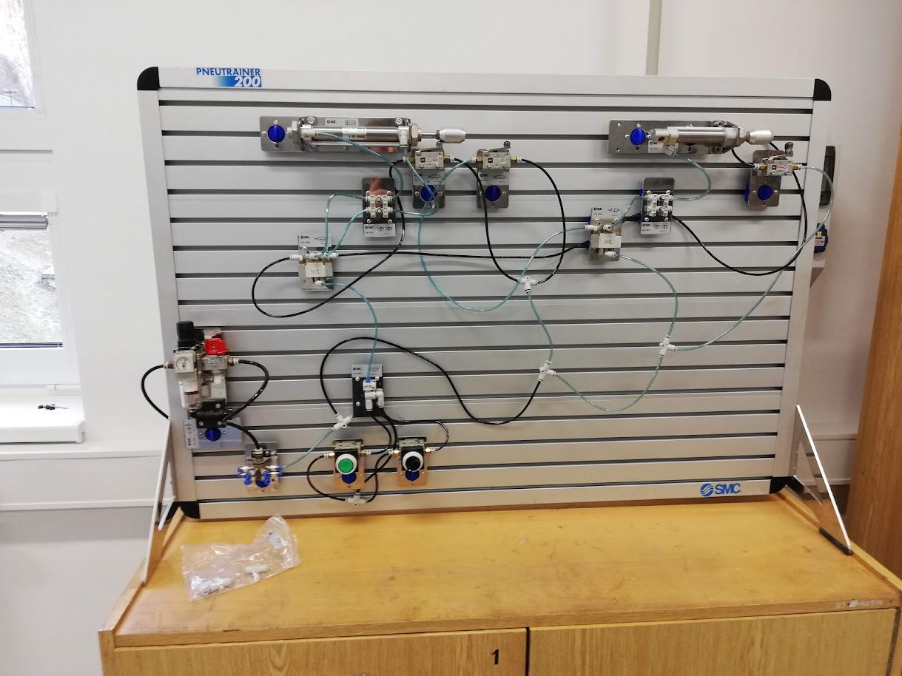

JLNN: Temporal Symbolic GNN for Pneumatic Digital Twin¶
This tutorial demonstrates the use of the JLNN library for modeling and diagnosing complex pneumatic systems. Unlike classic PLCs (binary logic), JLNN uses interval truth and temporal operators to detect anomalies before a crash occurs.

Note
The interactive notebook is hosted externally to ensure the best viewing experience and to allow immediate execution in the cloud.
Execute the code directly in your browser without any local setup.
Browse the source code and outputs in the GitHub notebook viewer.
Theoretical Introduction: Physics as Logic¶
In pneumatics, pressure corresponds to logical truth. However, in the real world, pressure constantly fluctuates, leaks, or builds up with latency. JLNN allows these phenomena to be modeled using:
Weighted operators (Łukasiewicz): They allow modeling of leakage (weights) and valve trigger thresholds (beta).
Temporal logic (LTL): The G (Always) and F (Eventually) operators monitor the stability and time limits of the sequence.
STGNN (Symbolic Temporal GNN): The physical interconnection of components (hoses, valves) is defined by an adjacency matrix through which “logical pressure” propagates.
STGNN Implementation¶
Below is the code for a complete implementation that defines the system topology, simulates real data with a fault, and performs temporal inference.
# Installation and automatic restart
'''
try:
import jlnn
import jraph
import numpyro
import ollama
from flax import nnx
import jax.numpy as jnp
import networkx as nx
import numpy as np
import xarray as xr
import pandas as pd
import qutip as qt
import optuna
import matplotlib.pyplot as plt
import sklearn
print("✅ JLNN and JAX are ready.")
except ImportError:
print("🚀 Installing JLNN from GitHub and fixing JAX for Colab...")
# Instalace frameworku
#!pip install jax-lnn --quiet
!pip install git+https://github.com/RadimKozl/JLNN.git --quiet
!pip install optuna optuna-dashboard pandas scikit-learn matplotlib --quiet
!pip install arviz --quiet
!pip install seaborn --quiet
!pip install numpyro jraph --quiet
!pip install networkx --quiet
!pip install qutip --quiet
!pip install ollama --quiet
# Fix JAX/CUDA compatibility for 2026 in Colab
!pip install --upgrade "jax[cuda12_pip]" -f https://storage.googleapis.com/jax-releases/jax_cuda_releases.html --quiet
!pip install scikit-learn pandas --quiet
import os
print("\n🔄 RESTARTING ENVIRONMENT... Please wait a second and then run the cell again.")
os.kill(os.getpid(), 9)
os.kill(os.getpid(), 9) # After this line, the cell stops and the environment restarts
'''
import subprocess
import jax
import re
import time
import jax.numpy as jnp
from typing import Dict
from jax import random
from flax import nnx
import networkx as nx
import numpyro
import numpyro.distributions as dist
from numpyro.infer import MCMC, NUTS
import arviz as az
import ollama
import numpy as np
import matplotlib.pyplot as plt
import matplotlib.ticker as mticker
from sklearn.datasets import load_iris
from sklearn.preprocessing import MinMaxScaler
from sklearn.metrics import accuracy_score
import threading
import time
from jlnn.symbolic.compiler import LNNFormula
from jlnn.reasoning.temporal import AlwaysNode, EventuallyNode
from jlnn.nn.functional import weighted_and, weighted_not, weighted_or
from jlnn.core import intervals
import xarray as xr
# 1. COMPATIBILITY ADAPTER (Hack Place)
class TemporalLogicAdapter(nnx.Module):
"""Wraps LNNFormula for compatibility with TemporalNode.forward()"""
def __init__(self, formula: LNNFormula):
self.formula = formula
def forward(self, values):
return self.formula(values)
# 2. TOPOLOGY DEFINITION (STGNN Structure)
COMPONENTS = ["GW", "C_A", "C_B", "S1", "S2", "S3", "S4"]
adj = jnp.zeros((7, 7))
adj = adj.at[0, 1].set(1.0) # GW -> Cylinder A
adj = adj.at[1, 4].set(1.0) # Cylinder A -> S2 (extended)
adj = adj.at[4, 2].set(1.0) # S2 -> Cylinder B (start sequence B)
adj = adj.at[2, 6].set(1.0) # Cylinder B -> S4 (extended)
def plot_topology(adj_matrix, node_names):
G = nx.DiGraph()
rows, cols = jnp.where(adj_matrix > 0)
for r, c in zip(rows, cols):
G.add_edge(node_names[r], node_names[c])
plt.figure(figsize=(10, 5))
pos = nx.spring_layout(G, seed=42)
nx.draw(G, pos, with_labels=True, node_color='bisque',
node_size=2500, arrowsize=20, font_weight='bold')
plt.title("Physical-Logic Topology (Information Flow)")
plt.show()
plot_topology(adj, COMPONENTS)
# 3. PARAMETERIZED SIMULATION (Physical Digital Twin)
def simulate_pneumatics(steps=40, leak_start=20, leak_severity=0.6, latency=5):
"""
Simulates the A+, B+ sequence with the possibility of air leakage (anomaly).
"""
data = jnp.zeros((1, steps, 7, 2))
data = data.at[..., 1].set(1.0) # Default uncertainty [0, 1]
for t in range(steps):
# 1. Gateway pressure
data = data.at[0, t, 0, 0].set(0.95)
# 2. Cylinder A responds with latency
if t > latency:
data = data.at[0, t, 1, 0].set(0.9)
# 3. S2 closes after A is ejected
if t > latency + 3:
data = data.at[0, t, 4, 0].set(0.9)
# 4. Sequence B with ANOMALIES (Leak)
if t > latency + 8:
lower = 0.9 * (1.0 - (leak_severity if t > leak_start else 0.0))
data = data.at[0, t, 2, 0].set(lower) # Cylinder B
data = data.at[0, t, 2, 1].set(0.8) # Increased Epistemic Gap
# S4 only partially closes due to low pressure
data = data.at[0, t, 6, 0].set(lower * 0.8)
return data
telemetry = simulate_pneumatics(leak_severity=0.6)
# 4. TEMPORAL SYMBOLIC GNN MODEL
class PneumaticSTGNN(nnx.Module):
def __init__(self, rngs):
# Adapter-wrapped symbols
self.s2 = TemporalLogicAdapter(LNNFormula("S2", rngs=rngs))
self.s4 = TemporalLogicAdapter(LNNFormula("S4", rngs=rngs))
# Temporal operators
self.always_s2 = AlwaysNode(self.s2, window_size=5)
self.eventually_s4 = EventuallyNode(self.s4, window_size=10)
def __call__(self, data, adj_matrix):
# Message Passing: Propagating truth through a graph (Topology Aware)
# (Batch, Time, Nodes, 2) @ (Nodes, Nodes)
propagated = jnp.einsum('btin,ij->btjn', data, adj_matrix)
# Grounding
values = {
"S2": propagated[:, :, 4, :],
"S4": propagated[:, :, 6, :]
}
# Temporal inference
s2_stable = self.always_s2.forward(values)
s4_reached = self.eventually_s4.forward(values)
# Logical aggregation of the sequence result
return weighted_and(jnp.stack([s2_stable, s4_reached], axis=1),
weights=jnp.array([1.0, 1.0]), beta=0.1)
# 5. EXECUTION & XARRAY DIAGNOSTICS
rngs = nnx.Rngs(42)
stgnn = PneumaticSTGNN(rngs)
health_score = stgnn(telemetry, adj)
# Xarray Diagnostika
ds = xr.Dataset(
data_vars={
"pressure": (("time", "node"), telemetry[0, :, :, 0]),
"uncertainty": (("time", "node"), telemetry[0, :, :, 1] - telemetry[0, :, :, 0])
},
coords={"time": jnp.arange(40), "node": COMPONENTS}
)
# 6. VISUALIZATION OF RESULTS
fig, (ax1, ax2) = plt.subplots(2, 1, figsize=(12, 10), sharex=True)
# Chart 1: Pressures (Truth)
ds.pressure.sel(node=["S2", "C_B", "S4"]).plot.line(ax=ax1, hue="node", linewidth=2)
ax1.set_title("STGNN Node Activation (Physical Truth Propagation)")
ax1.set_ylabel("Pressure (Lower Bound)")
ax1.grid(True, alpha=0.3)
# Chart 2: Epistemic Gap (Leak Diagnostics)
leak_node = "C_B"
gap_data = ds.uncertainty.sel(node=leak_node)
gap_data.plot(ax=ax2, color="darkorange", label=f"Uncertainty Gap ({leak_node})")
ax2.fill_between(ds.time, 0, gap_data, color="orange", alpha=0.3)
ax2.axhline(0.3, color="red", linestyle="--", label="Critical Leak Threshold")
ax2.set_title("Predictive Maintenance: Epistemic Gap Analysis")
ax2.set_ylabel("Gap Width")
ax2.legend()
plt.tight_layout()
plt.show()
print(f"Final Machine Health Assessment (Sequence A+ B+): {health_score}")
Meta-diagnosis and the Epistemic Gap¶
The key benefit of JLNN is transparency. We monitor the so-called Epistemic Gap (the width of the interval between the Lower and Upper bound). If the gap increases, the system detects uncertainty caused by, for example, air leakage or mechanical wear.
# Simulation of a leak on cylinder B (C_B)
telemetry = simulate_pneumatics(leak_severity=0.6, leak_start=20)
# Influence
rngs = nnx.Rngs(42)
stgnn = PneumaticSTGNN(rngs)
health_score = stgnn(telemetry, adj)
Key Takeaways¶
Topology is logic: Physical connectivity is represented by an adjacency matrix. Logical truth propagates as “pressure”.
Stability over binary: Temporal operators (Always, Eventually) enable robust control in a noisy industrial environment.
Predictive Maintenance: Epistemic Gap identifies machine degradation before an error occurs that would be caught by a classic PLC.
Differentiability: The entire pipeline is built on JAX/NNX, which allows for future learning of system parameters (Meta-learning).
Download¶
You can also download the raw notebook file for local use:
JLNN_temporal_gnn.ipynb
Tip
To run the notebook locally, make sure you have installed the package using pip install -e .[test].